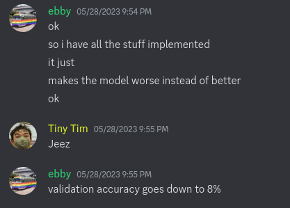

October 11, 2023
Documented here is a brief period of madness I slipped into last May, a completely unnecessary and self-inflicted source of stress at a time when I really didn’t need one.
It was nearing the end of my junior year of high school. For the last 4 weeks of my Machine Learning class, we each worked on independent projects of our choice.
For my project, I decided to implement a simple model on the GPU from scratch.
I decided on a one layer, fully connected neural net with softmax loss and stochastic gradient descent training on MNIST.
MNIST is a collection of grayscale 28x28 images of handdrawn numbers — given such an image, the model should determine what number it represents.
Theoretically it should have been very simple: it’s a no-frills one-layer network, and I’m training it on the simplest data set out there. Hand writing a GPU implementation is completely unnecessary, but seemed like a quick and easy proof-of-concept exercise. “Quick and easy.”
Implementing the net on the CPU was relatively straightforward, the code fits neatly into a 168 line file.
The short of it is that training this model consists in these steps:
- Multiplying a (batch_size x 784) matrix with a (784 x 10) matrix, then adding to it a (1 x 10) matrix and exponentiating the elements.
- Normalizing the values in a (784 x 10) matrix by columnwise vector.
- Subtracting a value from each row of a (batch_size x 10) matrix, then dividing every element by a constant.
- Transposing a (batch_size x 784) matrix, multiplying it by a (batch_size x 10) matrix, then adding a (784 x 10) matrix.
- Summing the rows of a (784 x 10) matrix.
- Adding/multiplying elementwise two (784 x 10) matrices and two (10 x 1) matrices.
for (arbitrarily chosen) batch_sizes 256 or 512.
Going into this project, I had little GPU compute experience outside of graphics-oriented compute shaders.
So, I decided to tackle everything naively and without looking at actual implementations, using wgpu and writing it all in WGSL compute shaders. This way, I wouldn’t have to spend time learning a new technology. I made a provisional sketch of the architecture.
Matrix multiplications would be handled by running shaders elementwise on the output matrix, writing to each node the dot product of the multiplicands’ row and column vectors corresponding to that element. The set of matrix multiplications required for this project is trivial enough that the dot products can be calculated in workgroup memory, there’s no need for a complicated tiling scheme (if I had realized this at the time, it would have saved me a lot of headache — but I get ahead of myself).
It would use four buffer bind groups: one for the model (weight + bias buffers), two for batches: one in flight, one being copied to (each with separate image and label buffers), one for the current scores/gradients, and one to output the current loss. In push constants (for convenience) we have the step size, batch size, and regularization constants.
It would have four sequential passes: calculate the scores, the loss, the gradient, and finally do the backpropagation. In the background we have a pending CPU-GPU transfer op to move the latest randomized batch onto the GPU.
This surely unassailable plan formed, I started programming.
As it turned out, WGSL did not support atomic floating point addition, which was necessary for my matrix multiplication. I asked the wgpu developers on their matrix chat, and they said that it was a thing they intended to eventually get around to doing.
So, instead, I rewrote my test shader in GLSL, which does have support for atomic floating point numbers (GL_EXT_shader_atomic_float), and I used direct SPIR-V passthrough to send it to wgpu.
Thing is, naga’s validator refused to accept the SPIR-V as valid, containing an instruction for which it had no support. I forked naga and removed the check — surprise surprise the program segmentation faulted.
Yeah, Vulkan extensions need to be enabled before they can be used. So I forked wgpu, and manually added the extensions to the Vulkan path to see what would happen. But it kept segmentation faulting. See, I had been running my project in release mode this whole time. The CPU implementation only performed well in this mode, and I had forgot to remove the flag. A side effect of release mode is that wgpu removes all the Vulkan validation layers, so I was getting no helpful error messaging as I tried to track down everything that I needed to tweak to get it to work.
Having eventually figured out that I needed to turn off release mode, I realized what Vulkan’s problem was.
Oh. My GPU’s Vulkan driver didn’t support atomic floating point addition. Or, at least, that’s what I thought.
Keen-eyed readers may notice that shaderSharedFloat32AtomicAdd was supported. My eyes glazed over that. In retrospect I realize why only this form of atomic addition is supported; best keep the expensive atomic operations in workgroup-local memory.
This project is something I could have done with wgpu. I could have continued to leverage my wgpu and naga forks and simply write my GLSL shaders to do atomic addition on floats in shared memory. This did not occur to me in my heightened state.
I briefly investigated using fixed radix numbers, but realized immediately that the conversions made it too annoying.
Instead, I made the completely wrongheaded and insane decision to scrap my work and rewrite it all in Vulkan. In even worse judgement, I decided to use ash, Rust’s raw thin bindings to Vulkan, instead of the higher level vulkano.
It was after I had deleted my forks and gotten about 3/4ths the way through the boilerplate necessary to compile a single shader that I realized I could have used shared memory float atomics with just wgpu. But, sunk cost fallacy. So I kept going.
As it turned out, I had two different Vulkan drivers installed: AMD’s amdvlk, and Mesa’s vulkan-radeon. Only vulkan-radeon had support for any kind of atomic floating point addition, but amdvlk was being used by default because it came first alphabetically. Thankfully this was fixed by just adding an environment variable to override which driver gets used.
By now I had far exceeded the amount of time it was reasonably expected I spend on this project, just dealing with the boilerplate needed to assemble and allocate the buffers and pipelines and shaders and descriptor sets. But I was committed.
I was working on the first shader: scores.comp, which computes what guesses the model makes for the current batch. It effectively does one matrix multiplication with some other stuff sprinkled on top.
I spent a day dealing with an inscrutable bug: sometimes it would give the right results, sometimes partially right results, sometimes total garbage.
Yeah, shared memory is by default uninitialized, not zeroed :P
That indiscretion fixed, I had one shader down, three to go. Theoretically. I actually ended up needing five shaders in total: I needed a second scores shader to do the columnwise normalization, then a loss shader, then two gradient shaders, one to normalize the scores and the other to do all the backpropagation.
I should note that by now the idea of batch size being encoded in push constants had flown out the window. If I wanted to change the batch size I’d just have to manually go change the values (which I did).
But, after several more hours, I had implemented all the shaders.

Oh. It’s not working.
Two excruciating days of debugging later, I was able to get it to work.
It turned out the problem was in my second gradient shader, I was not transposing a matrix correctly (mostly by not actually transposing it).
Finally! The model was working, and it had only taken like two weeks.
Except, well, one problem. It performed much worse than the CPU version. Also it was getting a 10% lower validation accuracy so that would make it two problems—
Around here I encountered my most embarrassing oversight, the result of not using unsafe Rust or Vulkan very often. My code was littered with undefined behavior that re-enabling release mode made suddenly result in segmentation faults. Basically I was taking references to structures that died before the references died, except they were silently converted to raw pointers so the compiler didn’t complain and I had to spend 30 minutes going through the code manually fixing every instance of this.
Anyways, after a bunch of profiling I managed to get the GPU performance closer to the CPU’s — 130 milliseconds slower to train for 5000 iterations with batch size 256 on the GPU. More detailed profiling showed that the GPU’s core loop took over twice as long as the CPU’s, it was only the fact it could shuffle new batches while it processed previous ones which made the performance not significantly worse.
By finagling the hyperparameters (changing the batch size to 512), I eked out a win of 260 milliseconds for the GPU for 5000 iterations.
Why was it so slow? Well, the matrix multiplications involved are relatively small. Conducting 784 atomic float additions per workgroup is expensive, and the CPU linear algebra library I was using is very highly optimized. The efficiency crossover point is probably for significant larger matrices.
Oh, I also never figured out why the GPU and CPU implementations consistently had a 10% gap in validation accuracy with exactly the same hyperparameters. It’s not like it really matters, since this was a low-stakes school project, but I still have no idea where the problem is.
So, what did we learn?
For one, Vulkan is for middleware/engine developers, and nobody else.
Appreciate the massive amount of work that goes into developing GPU acceleration for game engines and libraries like PyTorch.
Also, don’t saddle yourself with a ton of unnecessary work when you’re trying to finish your junior year of high school that’s another good takeaway I think. At least my teacher and classmates appreciated my effort :)